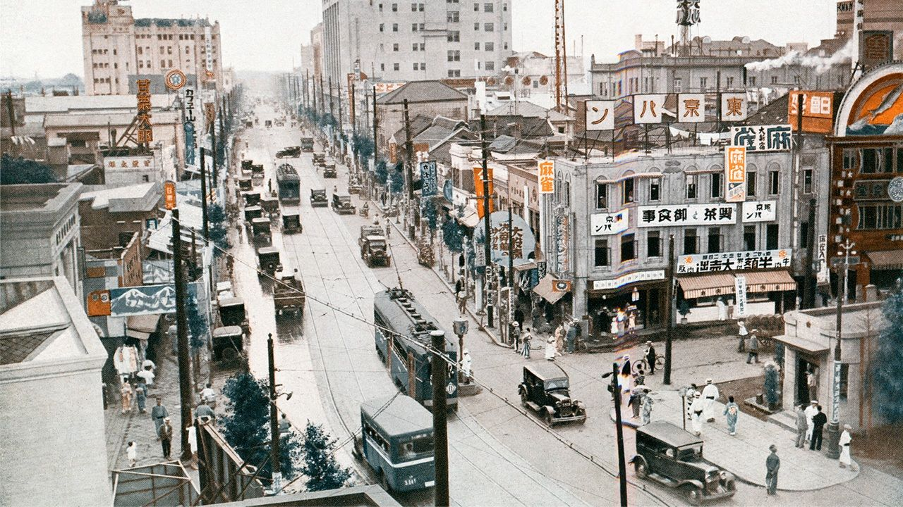
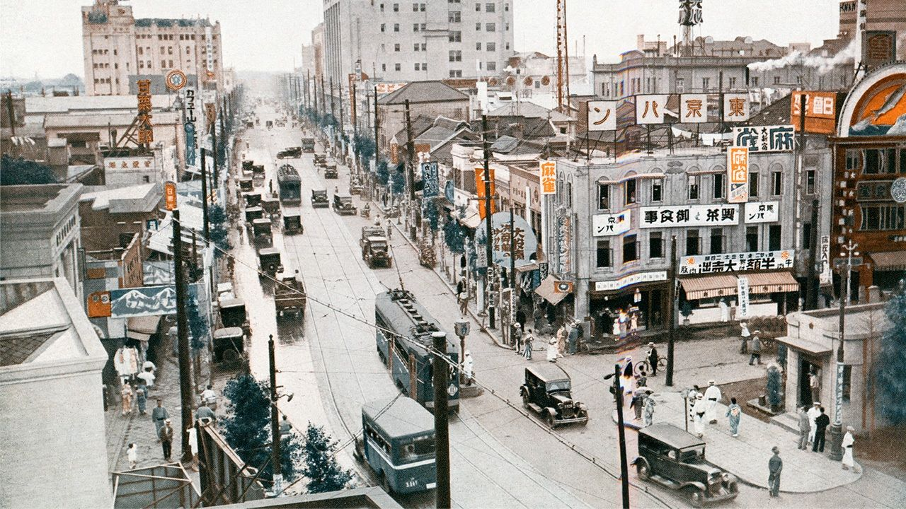
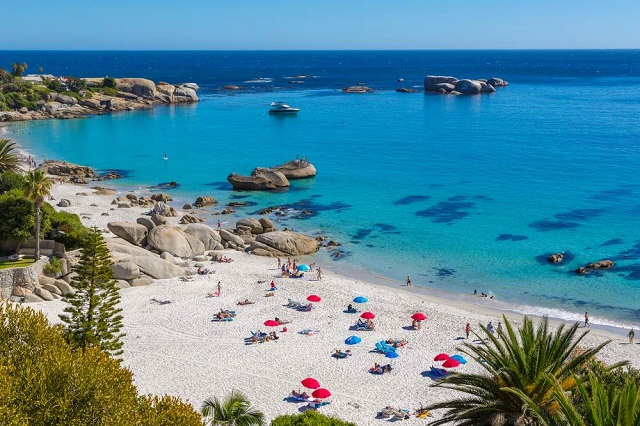
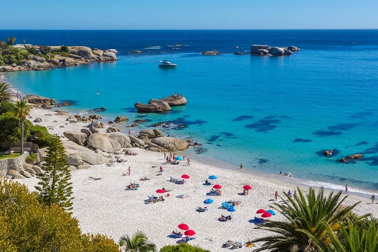
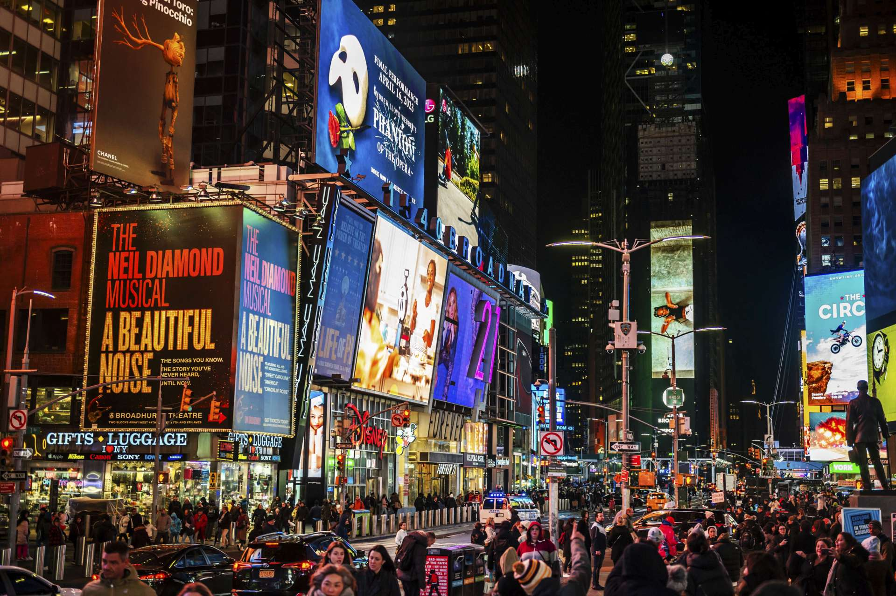
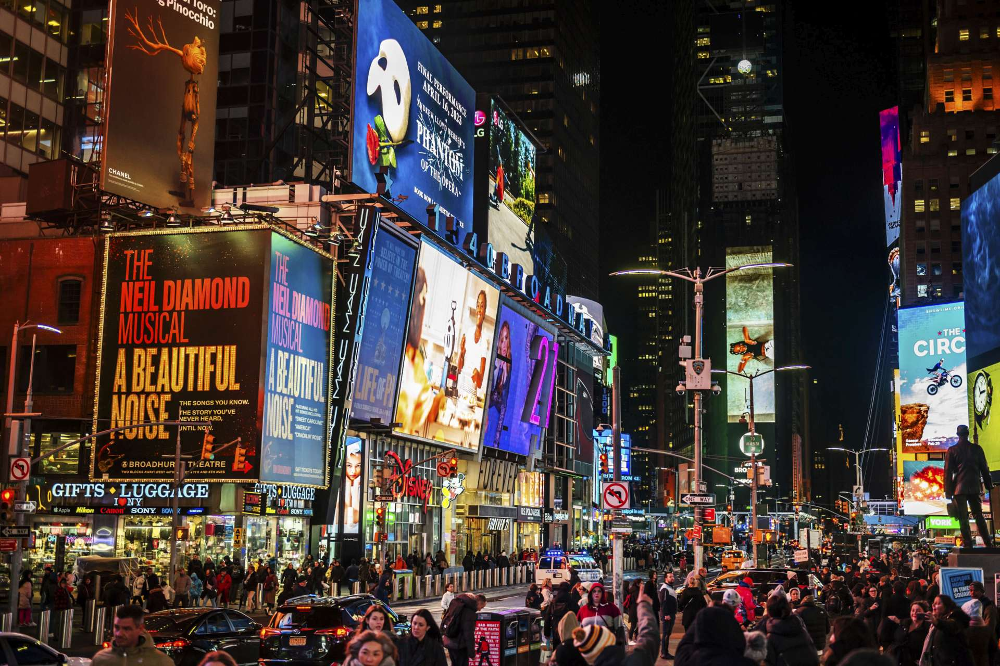

Tokio
Tokio es una ciudad vibrante donde la tecnología se mezcla con la tradición. Desde templos antiguos hasta rascacielos futuristas, es un destino único.
 "
"
Tokio es una ciudad vibrante donde la tecnología se mezcla con la tradición. Desde templos antiguos hasta rascacielos futuristas, es un destino único.

"
La Ciudad del Cabo es famosa por sus impresionantes paisajes, playas y la famosa montaña de la Mesa. Un lugar lleno de historia y naturaleza.
 

Sídney es conocida por su famosa ópera y el puente de la bahía. Disfruta de su vibrante vida cultural y playas hermosas.


La ciudad que nunca duerme: Nueva York es famosa por su energía única, la Estatua de la Libertad, Central Park y sus emblemáticos rascacielos.
 


Tokio lanza nuevas rutas turísticas para explorar los barrios ocultos de la ciudad.
La Ciudad del Cabo celebra un festival de música internacional este mes.
¡Sídney lanza nuevas exposiciones de arte en su famosa Galería de Arte!